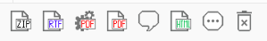
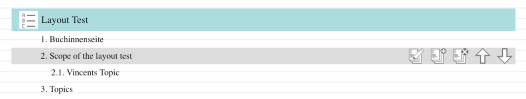

Projekt Historie
Seit 2004 bin ich als Software-Entwickler und IT Consultant tätig.
XML Developer
seit 09/2018
- XML Developer bei LambdaWerk GmbH[[fn:LW;http://www.lambdawerk.com]] in Berlin.
- Ich beschäftige mich mit EDI (Electronic Data Interchange) Systemen für die U.S. Gesundheitsbranche.
- Insbesondere kümmere ich mich um XML Transformationen.
- Arbeit nach SCRUM.
Web Architekt
seit 08/2016
- Konzeption und Implementierung eines web-basierten CCMS[[fn:CM;https://en.wikipedia.org/wiki/Component_content_management_system]].
- Schlagworte zu Tektur CCMS[[fn:TE;http://www.tekturcms.de]]:
- Single Source Publishing[[fn:SE;https://de.wikipedia.org/wiki/Single_Source_Publishing]]So sieht bspw. die Aktionsleiste aus, die Tektur für jeden Topic, Task oder jede Map bereitstellt:(nur zur Illustration)
- Topic Based Authoring[[fn:TA;https://en.wikipedia.org/wiki/Topic-based_authoring]]Beispielsweise wird die DITA Map mittel Drag 'n Drop auf einer Baumstruktur angelegt:
- Review & Approval WorkflowJede Textpassage kann in Tektur kommentiert werden. Diese Änderungswünsche von Fachexperten durchlaufen einen konfigurierbaren Workflow.
Senior Consultant AEM Forms Backend
10/2016 - 08/2018
- Consultant bei eggs unimedia GmbH[[fn:EG;http://www.eggs.de] in München.
- Arbeit nach SCRUM.
- First-Level-Support in den Kundenprojekten mit Schwerpunkt Prozessmodellierung
- Kommunikation mit den Support-Partnern aus Indien
- Unterstützung bei der Implementierung eines formularbasierten Workflows zur Bedarfsmeldung der Institute einer Forschungsgesellschaft, Einsatz der Programmiersprache XSLT und Modellierung der Geschäftsprozesse mittels Adobe AEM Forms / Adobe Livecycle